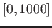
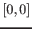
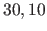

Next: Time integration and Poincaré Up: The odefile of a Previous: Access to function and Contents
Time integration (= simulation) of the dynamical system can be done on the command line as in the following example:
OPTIONS=[];
hls = MyML;
[t,y] = ode45(hls{2},[0 1000],[0 0],OPTIONS,30,10);
x0 = y(end,:)';
In this example the system MyML is integrated over the interval 
starting with the input vector  and with parameters  in that order.
The integration is performed with the integration routine ode45 with the defaults
(OPTIONS=[]) in MATLAB. The output vector is placed in x0. More details are given
in Chapter 5.